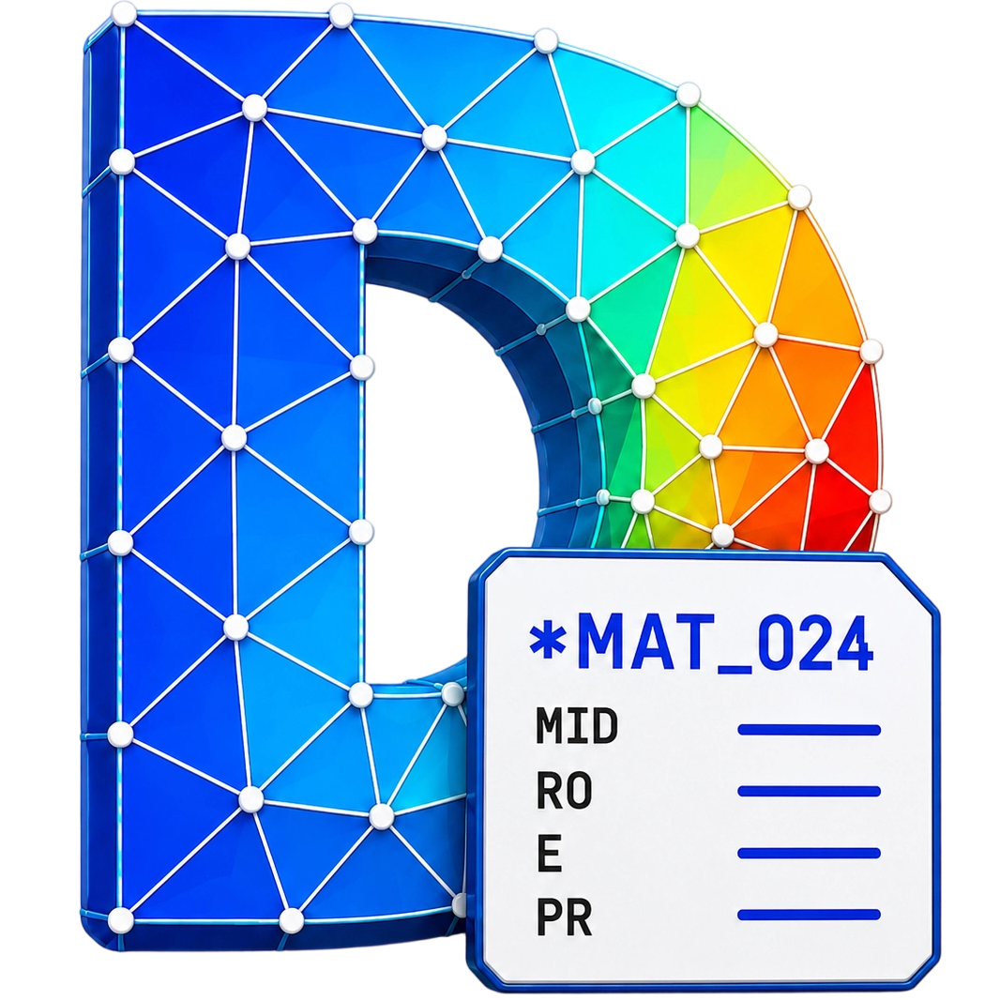

DynaSense
返回产品页
体验任务
⌄
开启引导
EN
安装
Drop Test
⌕
搜索操作
F1
工作区菜单
▱
≡
⌘
▤
⚙
↶
↷
保存
字段帮助
卡片管理器
正在打开工作区…
上一字段
下一字段
补全
清空字段
整理卡片
定位到这里
←
跳过
×
文件
编辑
资料
操作
DYNASENSE
从一个小任务开始
×
打开同一个模型，体验不同的编辑方式。
自由探索工作区 →
搜索操作
关闭
恢复整个样例？
当前编辑将被原始案例内容替换。
取消
恢复样例